This project is from my first internship, working with a company called TruckerSay. I collaborated closely with the COO to design a platform aimed at helping trucking professionals and those interested in the industry make informed career and business decisions.
From the start, my main goal was to approach the project from the user’s perspective—understanding the needs of both trucking service providers and individual truckers. The vision was to create a Yelp-style web service where users could review, research, and connect with companies in the trucking industry.
My role involved designing the landing homepage, the sign-up flow, and the end-to-end experience of search pages, company profiles, and related account features. (Due to an NDA, I’m unable to share all project details.)
Role: UI/UX Design Intern
Brand: TruckerSay
Project Type: Web Design with Figma
UX Research
At the start of my internship, I interviewed 15 truck drivers to understand how they choose employers and what factors matter most in that decision. I wanted to learn where they look for information, how they decide which companies are worth working for, and what challenges they face along the way.
One clear takeaway was that many drivers had trouble figuring out which employers were trustworthy because there was no dedicated review platform. Using these insights, I created a user persona and an empathy map to represent their needs, frustrations, and goals, which helped guide the design work moving forward.
User Persona
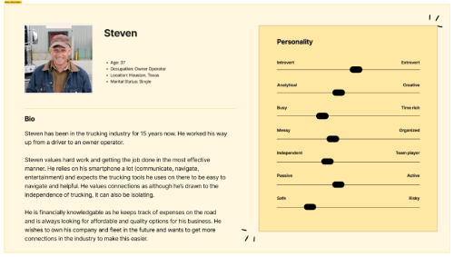
Empathy Map
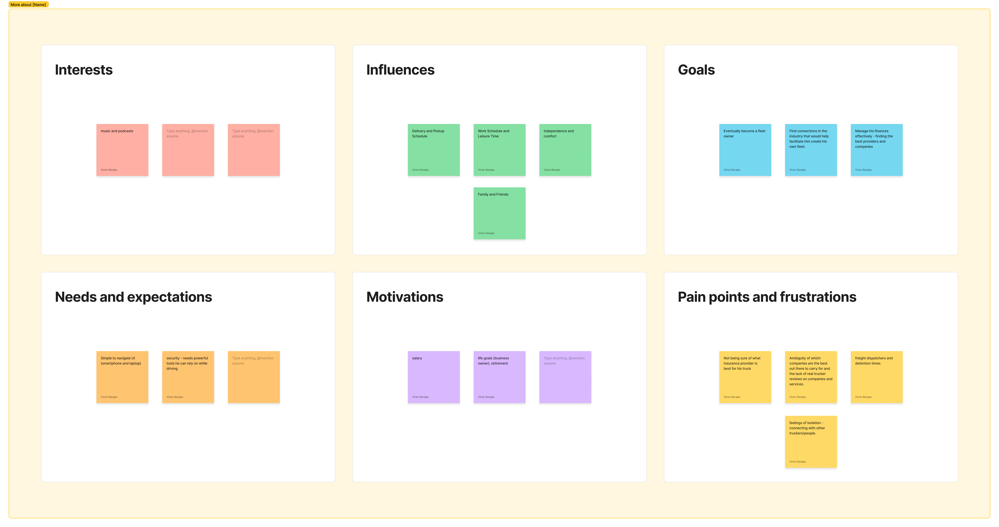
Competitive Analysis
After creating the empathy map, I reviewed two similar platforms—TruckerPath and CDLLife—
to understand how they structure their navigation, present features, and communicate value.
This gave me insight into the industry and helped me decide how I should begin to construct the home page.
Key takeaways for home page design:
Keep logo in the upper left for easy navigation.
Use a compelling hero image with a clear, short value statement.
Consistent CTAs in high visibility areas.
Features with short descriptions and visuals in a card layout.
Brand identity that aligns with target audience
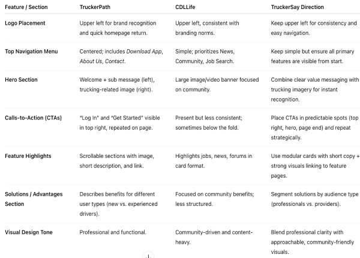
UI/UX Design
Using the key takeaways from the competitive analysis, I moved into the low-fi designs for the home page. I started by sketching ideas on paper, focusing on clear navigation, strong hero messaging, and consistent calls-to-action.
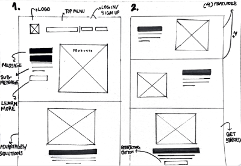
After getting feedback from the executive and design teams, we moved the designs into a digital format to refine the layout. The site would be a review platform with a rewards system to encourage users to stay active on the platform, and have a separate interface and dashboard for businesses owners/service providers. These first wireframes shaped the overall structure and design style for the site moving forward.
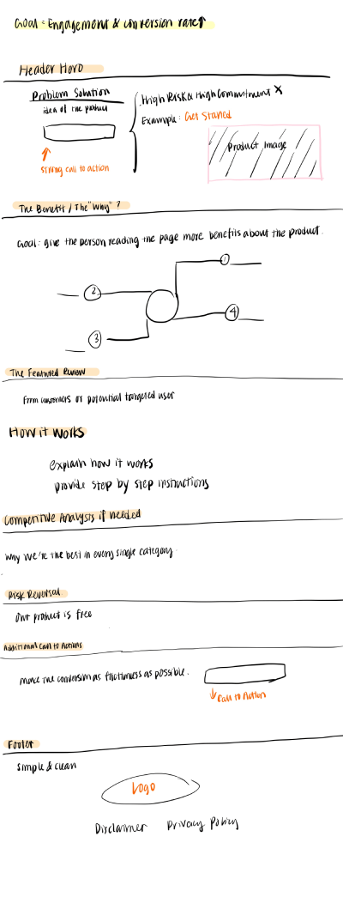
User Flow
Once the basic structure of the home page was in place, we shifted focus to mapping out the user flow. The goal was to understand exactly how users would move from the home page to other areas of the site and how each pathway would connect to key features.
We mapped flows for accessing provider profile pages, writing and submitting reviews, and navigating the rewards system for active users. This step helped make sure the navigation felt clear and that users could get to where they needed without unnecessary steps.
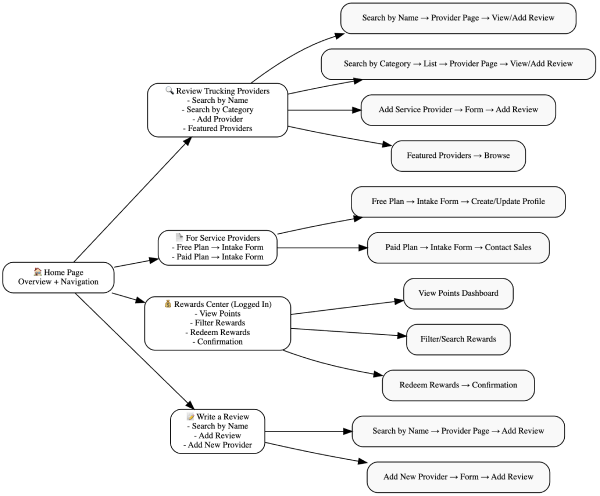
Revisions
After mapping out potential paths users could take from the home page, we moved forward with finalizing the design. This included establishing a UI kit for the site and refining the layout, visuals, and interactions to align with the user flow.
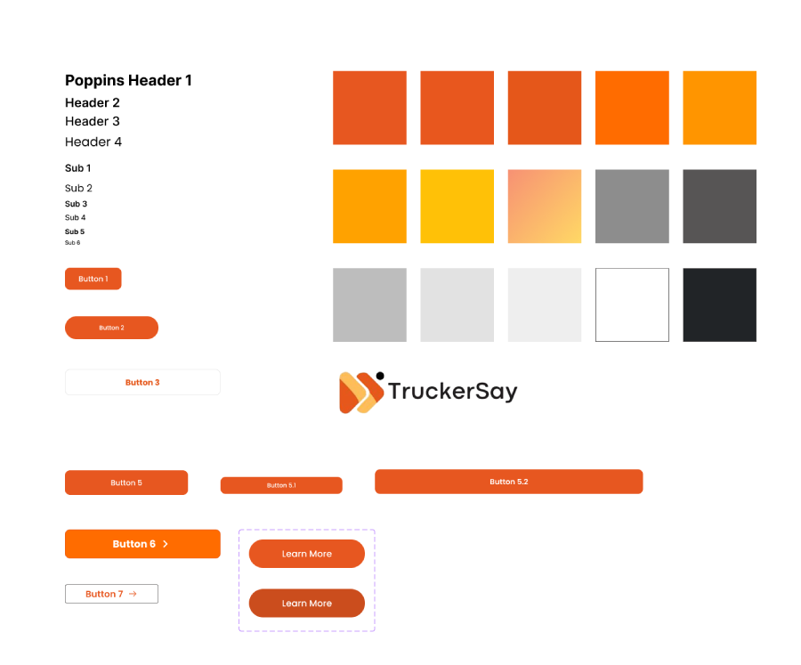
With the home page, we aimed to create calls to action to sign-up to earn rewards, and to inform visitors of the benefits and what the company does.
Final Home Page Design
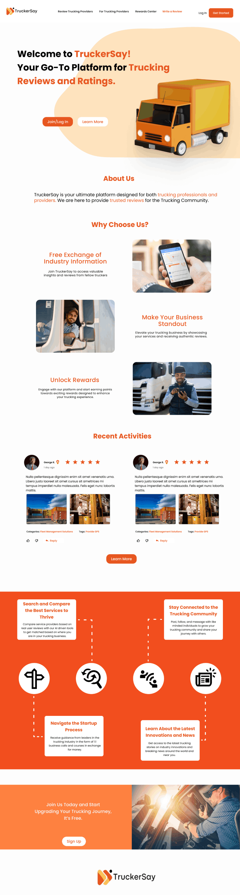
The next step after the home page was to focus on the four main pages of the site: rewards system for users, for service providers, review trucking providers, and writing a review. We outlined the potential flows, structure, and features for each section based on discussions with the executive team about business goals and user needs.
Rewards System User Flow
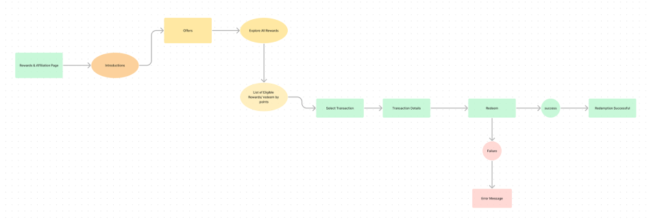
Starting with the rewards system, we began by mapping user flows for how members would access and interact with rewards from the homepage and other areas of the site. We started exploring features for our main pages such as badges for our rewards system.
We wanted something that could make the rewards page meaningful and encourage continued activity. One idea was to use badges that visually represent a user’s level of activity and how long they’ve been a part of the platform. These early concepts helped us think about how rewards could motivate engagement and build a sense of community within TruckerSay.
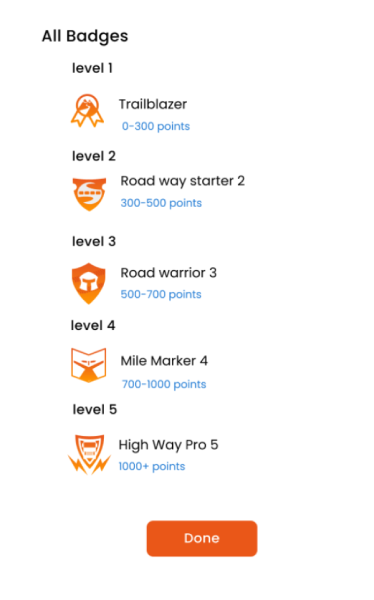
Throughout the site, we made sure to consider both signed-out and signed-in states, since new users exploring the platform would need different information than those with accounts.
For signed-out providers, we designed dedicated landing pages that introduced the platform, explained benefits, and gave them a clear path to sign up. For signed-in providers, the focus was toward features that supported managing their profile, viewing reviews, and engaging with features/drivers. This created an entry point for curious visitors while providing tools active users would need.
For Trucking Providers Landing Page (Signed-Out)
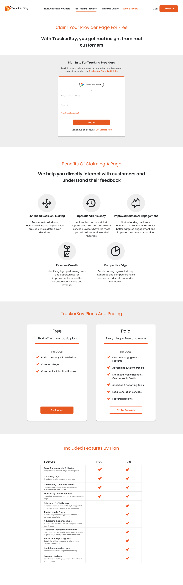
Final Designs
Over the course of several months, we finalized the platform for TruckerSay. This included profile and company pages, the sign-up and log-in flows, search and review pages, trucking provider sign-up, and provider dashboards. Since the startup has not yet launched, I am limited in how much of my work I can share publicly due to an NDA.
Create an Account
Rewards
The rewards pages were also completed, giving users a dedicated space to review their activity, manage their account, and track points. These points could then be redeemed for prizes they could use on the road, helping to encourage ongoing participation and engagement on the platform.
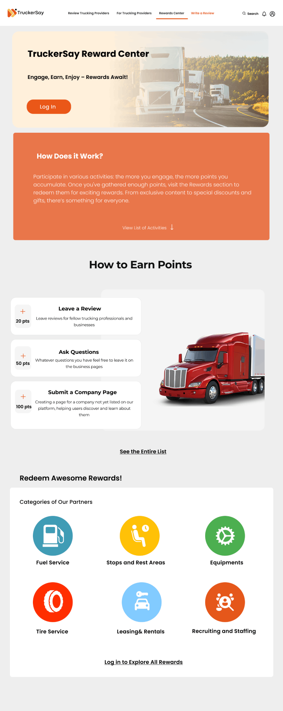
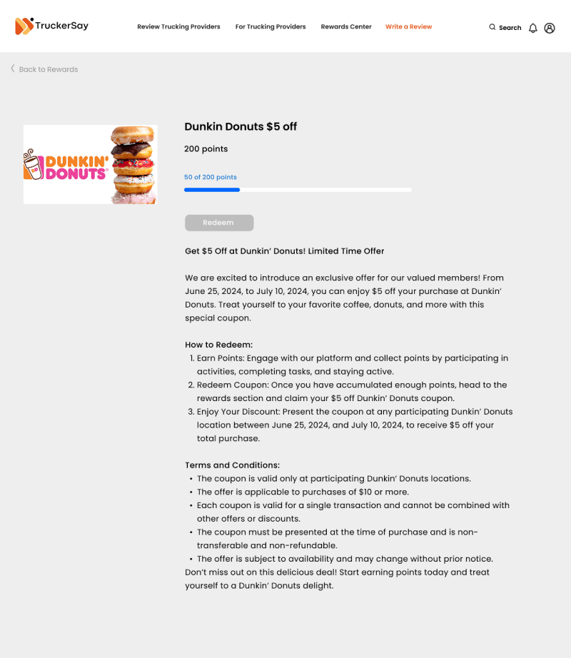
Review Trucking Providers
For the search and review pages, my focus was on designing for all possible search outcomes. I started by considering what users would want to see on the landing page, and then mapped out flows for when a search returned matches, when it didn’t, and when users chose to navigate to a company’s profile to review its content. In cases where no results appeared, the design prompted users to add a new company—similar to Yelp—which became its own separate flow.
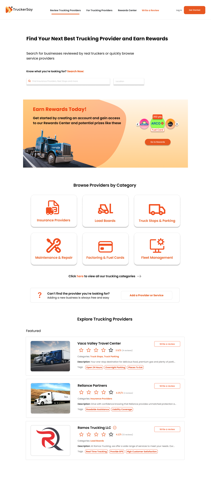
For Trucking Providers
For these pages, we designed an entirely separate dashboard from regular users. Here, the focus was on what businesses and service providers would want to see and manage in an employer platform.
This included analytics for tracking engagement, tools for shaping their brand, features to connect with job seekers and services, and options for customizing their profile. The goal was to give providers a professional space to manage their presence on TruckerSay while making it easy to track performance and interactions.
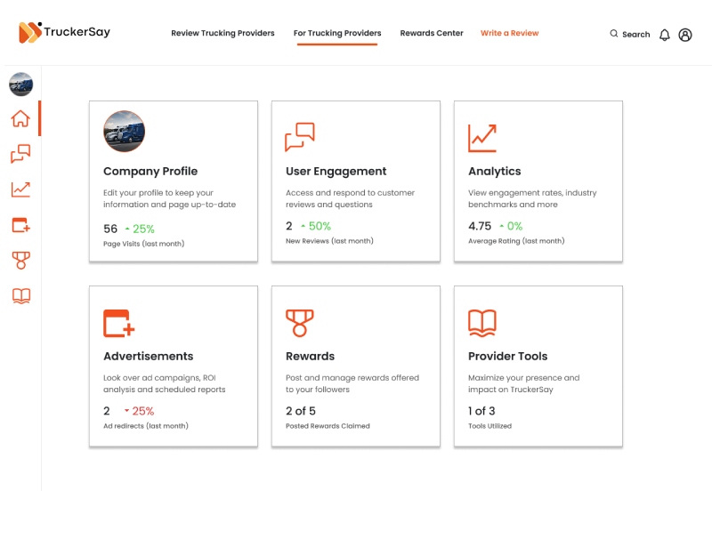
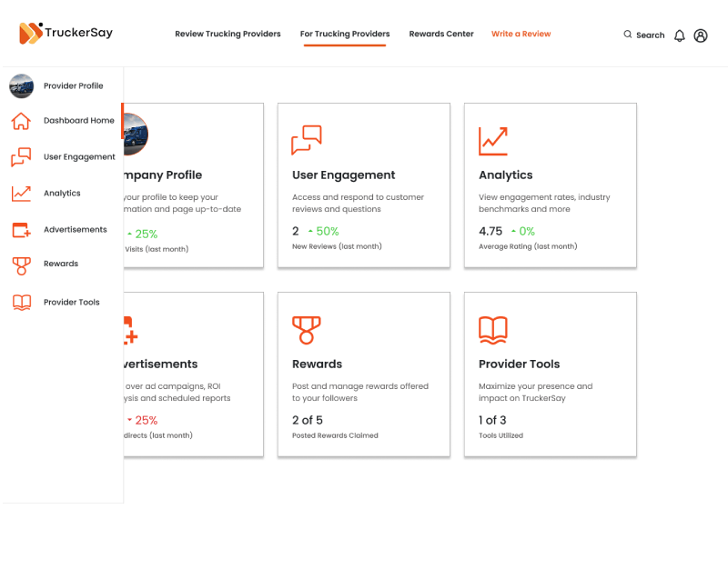
Final Video Showcase
And here is a final video showcasing some of the designs such as the provider account and search results.
Final Thoughts
Overall, this internship helped me grow significantly as a designer and showed me the value of collaborating closely with a team. It gave me the opportunity to put into practice the skills I had been developing in university as an interactive design student, while also learning how to adapt those skills to real-world challenges. Moving forward, I plan to carry these lessons with me as I continue building my career in design.